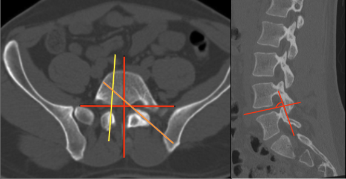

Adapted from: Weerakkody Y, Skandhan A, Luong D, et al. Facet joint tropism. Reference article, Radiopaedia.org (Accessed on 04 Jan 2026) https://doi.org/10.53347/rID-90699
1) Description of Measurement
Facet joint orientation describes the angular relationship of the lumbar zygapophyseal joints relative to the midsagittal plane. Orientation reflects biomechanical behavior of the motion segment:
Facet tropism represents asymmetry between right and left facet joint angles, causing uneven motion and asymmetric load transfer. According to the attached study, facet tropism is defined as a bilateral difference > 10° in the axial plane. A smaller angle indicates sagittal orientation, while a larger angle indicates coronal orientation.
2) Instructions to Measure
3) Normal vs. Pathologic Ranges
4) Important References
Ishihama Y, Tezuka F, Manabe H, et al. Facet Joint Morphology and Tropism in Adolescents: Association With Lumbar Disk Herniation and Spondylolysis. Spine (Phila Pa 1976). 2024 Jul 15;49(14):1029-1035. doi: 10.1097/BRS.0000000000004818.
Ranjbar E, Alizadeh SD, Mirkamali H, et al. Facet joint tropism in degenerative lumbar scoliosis: a retrospective case-control study. Spine Deform. 2025 May;13(3):897-902. doi: 10.1007/s43390-024-01037-0.
Carneiro VM, Pongeluppi RI, Fernandes DS, et al. Correlations Between Facet Tropism, Joint Mobility and Degree of Displacement in Patients with Low Grade Spondylolisthesis. Turk Neurosurg. 2024;34(6):1050-1055. doi: 10.5137/1019-5149.JTN.40720-22.3.
5) Other info....
Axial facet tropism is particularly prevalent at L4–5 and is associated with lumbar disc herniation and spondylolysis, especially in adolescents.
Coronalized facets increase rotational stress, while sagittalized facets predispose to shear-related pathologies.